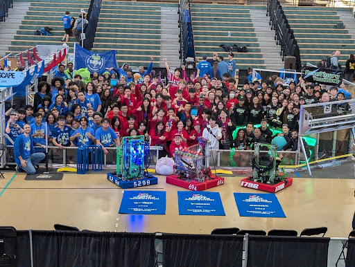

Mechanical
Design and build the robot in small groups of 4 to 6, each led by a veteran and focused on one part: drive train, electronics or a mechanism.
- CAD
- Machining
- Electronics
If you go to Stuyvesant, you can join. You don't need to know anything about robots yet. We'll teach you.

You join one department, but nobody stops you from learning the others.
Design and build the robot in small groups of 4 to 6, each led by a veteran and focused on one part: drive train, electronics or a mechanism.
Write the code that drives the robot on the field. We teach everyone Java from scratch, and all our code is open source.
Run the team like a company: sponsors, outreach, StuySplash, social media and the newsletters.
Scout every match, read the data and help decide how the robot plays and who we pick as partners.
Come to the interest meeting and learn the basics in your department.
In January, FIRST reveals the new game and we start from a blank page.
Design, build and code the robot between kickoff and our first competition.
Take it to regionals in the spring, and maybe further.
No. Training starts from zero in every department.
Any Stuyvesant student, freshman through senior.
Less in the fall, more during build season and competitions. Your department lead can tell you what to expect.